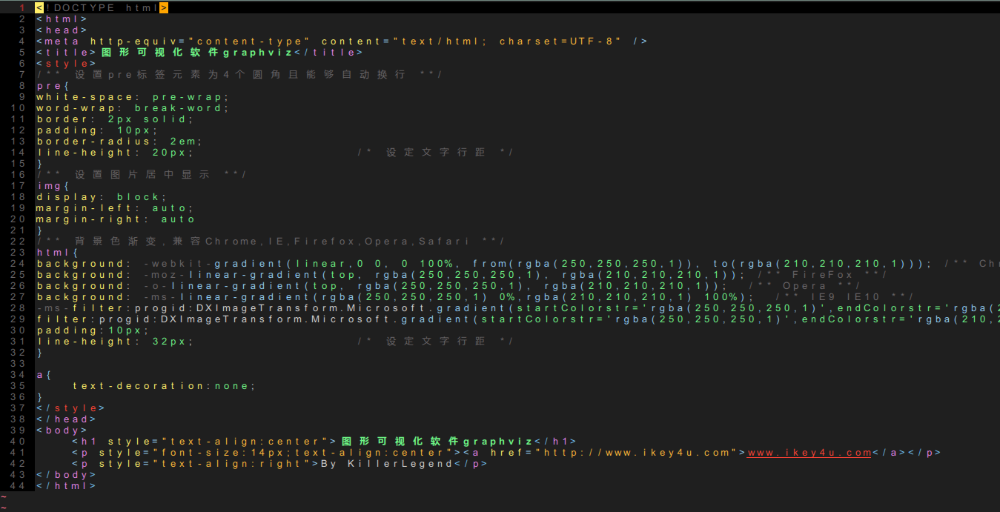
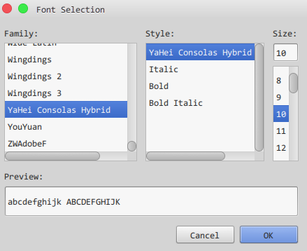
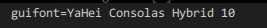
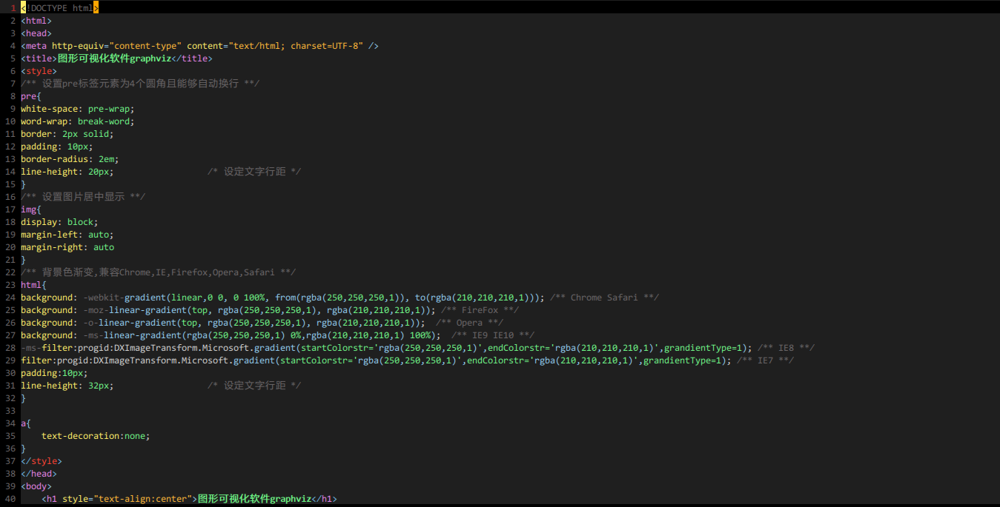

vim字体设置
www.ahageek.com
一直使用gvim写东西,然而很长的一段时间里都是使用gvim默认提供的字体.着实难看,但是由于曾经探索很久都无法解决在gvim中设置很漂亮的字体,没有办法遂将就这用到今天.
我的意思就是说,TMD从今天起再也不用将就gvim的蹩脚字体了.
曾经在网上寻觅许久,很多人对于vim中字体的设置都是类似于set guifont=Yahei_Consolas_Hybrid:h11,然而在我设置之后就变成了这个样子:

这种画面惹人醉.都神马玩意儿...默默的换回默认字体了...
今天突发奇想,gvim不是提供GUI界面嘛,那我就通过GUI菜单设置然后再看看字体配置是什么,再将其加入到.vimrc不就可以了吗?也正是通过这种方法解决了字体问题.
首先调出gvim的菜单,依次Edit->Select font...,弹出如下菜单:

选择你喜爱的字体,比如这里我选择Yahei Consolas Hybrid,大小为11号,点击OK,这个时候回到了vim的编辑界面,在命令行里输入:set guifont,然后自动会显示当前的字体设置如下:

就是这个,然后直接放到.vimrc文件中,不过有一个问题需要注意,其中的空格需要用反斜线来转移,就像这样set guifont=YaHei\ Consolas\ Hybrid\ 10
重新用vim打开一个文本文件吧,和第一幅图对比一下,这是修改后的效果:

By KillerLegend 2015.09.04